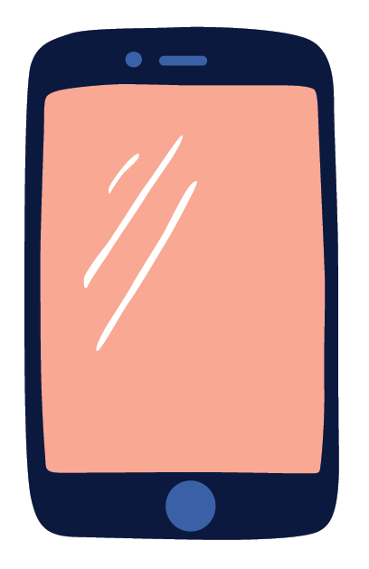
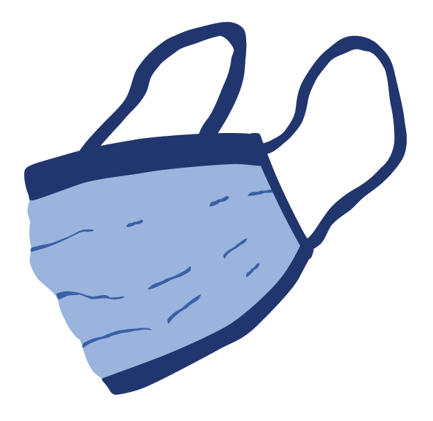

NUTIDEN
KROPSPOSITIVISME OG SOCIALE MEDIER
I dag lever vi en tid hvor vi konstant blive eksponeret for opslag på sociale medier. De fleste
unge mennesker bruger i dag hyppigt medier som tiktok og instagram, og trendsene derpå skifter
som vinden blæser. De sociale medier er en primær faktor til hvordan kropsidealerne er i dag.
På sociale medier kan man se kendte personer som den amerikanske sangeringe Lizzo og
den danske sangerinde Jada som repræsenterer "kropspositivisme". Det er mere okay at have
former. Men hvad påvirker mon dig?

HVOR TILFREDS ER DU MED
DIN KROP?
HVOR TILFREDS ER DU MED
DIN KROP?
